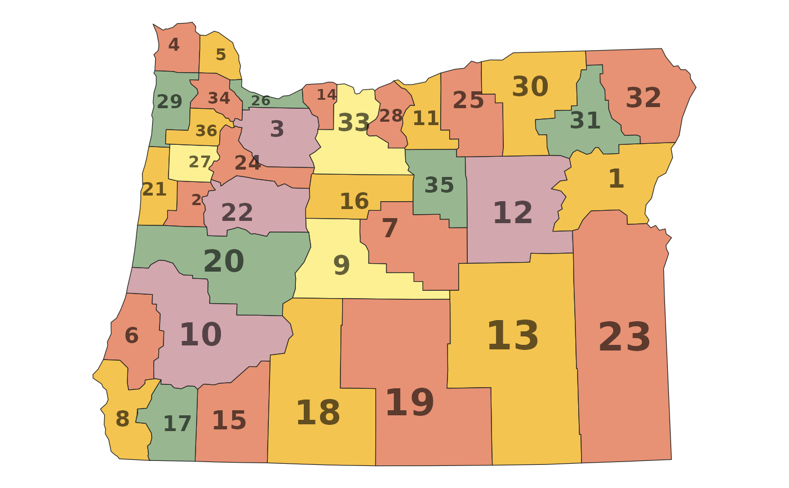
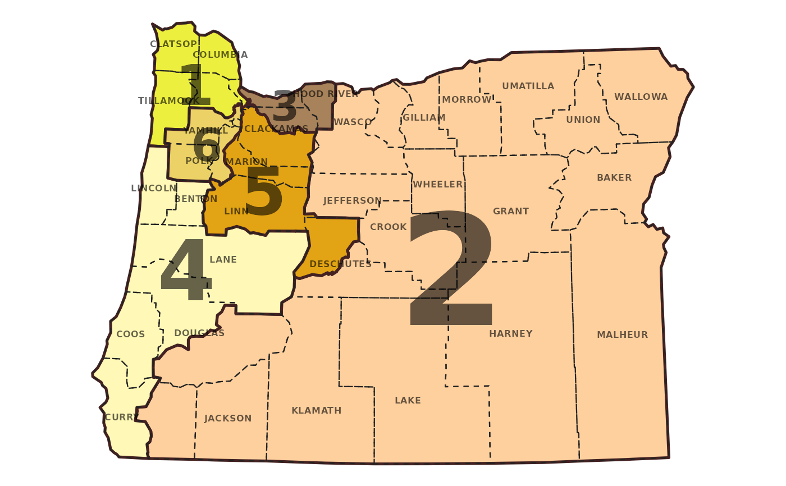

Aggregates shapefile according to the group aesthetic and positions labels
for each region defined by group. By default, labels will be sized in rough
proportion to the available area.
Usage
geom_district_text(
mapping = NULL,
data = NULL,
position = "identity",
na.rm = FALSE,
adjust = 1,
check_overlap = FALSE,
parse = FALSE,
show.legend = NA,
inherit.aes = TRUE,
...
)
geom_district_label(
mapping = NULL,
data = NULL,
position = "identity",
na.rm = FALSE,
label.padding = ggplot2::unit(0.25, "lines"),
label.r = ggplot2::unit(0.15, "lines"),
label.size = 0.25,
check_overlap = FALSE,
parse = FALSE,
adjust = 1,
show.legend = NA,
inherit.aes = TRUE,
...
)
stat_district_coordinates(
mapping = NULL,
data = NULL,
geom = "text",
position = "identity",
na.rm = FALSE,
adjust = 1,
show.legend = NA,
inherit.aes = TRUE,
...
)Arguments
- mapping
Set of aesthetic mappings created by
aes()- data
The data to be displayed in this layer
- position
Position adjustment
- na.rm
if
TRUE, will silently remove missing values from calculations- adjust
A multiplicative scaling factor for the default label sizes
- check_overlap
If
TRUE, text that overlaps previous text in the same layer will not be plotted.- parse
If
TRUE, the labels will be parsed into expressions and displayed as described in?plotmath.- show.legend
Should this layer be included in the legends?
- inherit.aes
If
FALSE, overrides the default aesthetics, rather than combining with them.- ...
Passed onto the underlying geoms.
- label.padding
Padding around label
- label.r
Radius of rounded corners
- label.size
Size of label border (mm)
- geom
The geometric object to use display the data
Examples
library(ggplot2)
data(oregon)
ggplot(oregon, aes(group=county)) +
geom_district() +
geom_district_text() +
scale_fill_randmcnally() +
theme_map()

ggplot(oregon, aes(group=cd_2020)) +
geom_district(lwd=0.9, color="#442222") +
geom_district(aes(group=county), lwd=0.4, lty="dashed", fill=NA) +
geom_district_text(aes(group=county, label=toupper(county)),
size=2.2, check_overlap=TRUE) +
geom_district_text(adjust=2) +
scale_fill_penn82() +
theme_map()
